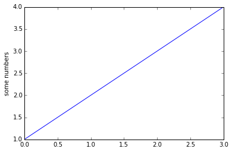

markdown/ipython blog test. I think this is an even better way of doing it.
%matplotlib inline
import matplotlib.pyplot as plt
plt.plot([1,2,3,4])
plt.ylabel('some numbers')
plt.show()

I think this copes with code better.
def foo():
x=1
z=x
l=[a for a in range(10)]
foo()
Now I'm confused.
import string
s='boo'
test
s='boo'